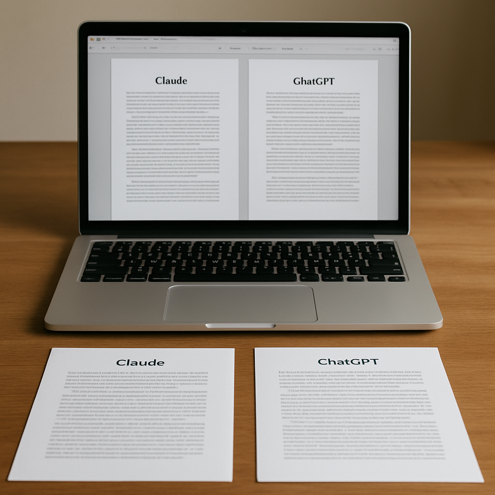

Overview
Writing long documents can be challenging. Many seek assistance from AI tools. Two popular options are Claude and ChatGPT. Each has unique features and benefits. Understanding these can help you choose the right tool for your needs.
Claude is designed for structured tasks. It excels in organization and clarity. On the other hand, ChatGPT offers a more conversational approach. This may suit creative writing better. Both tools have their merits depending on the context.
Choosing the right AI writing assistant enhances productivity. It can save time and ensure quality output. Let’s explore these tools in detail to understand their capabilities.
Ease of Use
Both Claude and ChatGPT are user-friendly. However, the experience varies. Claude’s interface is straightforward. Users can easily navigate tasks and structure their documents.
ChatGPT, while also intuitive, leans towards conversational prompts. This encourages a more interactive experience. New users might find it engaging and dynamic.
In both tools, learning curves are minimal. Standard features are easy to grasp, and comprehensive help guides are available. Ultimately, your preference for a particular style may influence ease of use.
Content Quality
Content quality is crucial when drafting long documents. Claude focuses on clear, concise writing. It’s adept at maintaining organization throughout lengthy texts.
Conversely, ChatGPT excels in creativity and flow. Its ability to generate engaging narratives can be invaluable for storytelling. However, it may require more editing for clarity in technical documents.
Evaluate your needs. If you need structured content, Claude may serve better. For engaging narratives, ChatGPT shines brightly. Both tools are capable, but specific strengths cater to different requirements.
Customization and Flexibility
Customization is an integral feature for many users. Claude allows for specific formatting and outlines. This makes it suitable for academic and technical writing.
ChatGPT offers versatility in writing style. Users can prompt it to adopt various tones and styles. This flexibility is advantageous for creative projects.
Your choice can depend on whether you need rigid formats or adaptable styles. Each tool offers different levels of customization. Consider how that aligns with your project objectives.
Cost and Subscription Models
Pricing plays a significant role when choosing an AI tool. Claude generally follows a subscription model. Users pay a monthly fee for access to advanced features.
ChatGPT also has subscription plans. Free versions are available, but with limitations. Premium subscriptions unlock more extensive capabilities and features.
Analyze your budget and frequency of use. A long-term commitment to one tool may be worthwhile. Choose the option that provides the best value for your specific needs.

Comparison Table
| Feature | Claude | ChatGPT |
|---|---|---|
| Ease of Use | Highly Structured | Conversational |
| Content Quality | Clear and Concise | Creative and Engaging |
| Customization | Moderate | High |
| Pricing | Subscription-Based | Free/Paid Plans |
- Determine your writing goals.
- Evaluate ease of use for each tool.
- Consider your budget for subscriptions.
- Assess the quality you need in content.
- Look into customization options available.